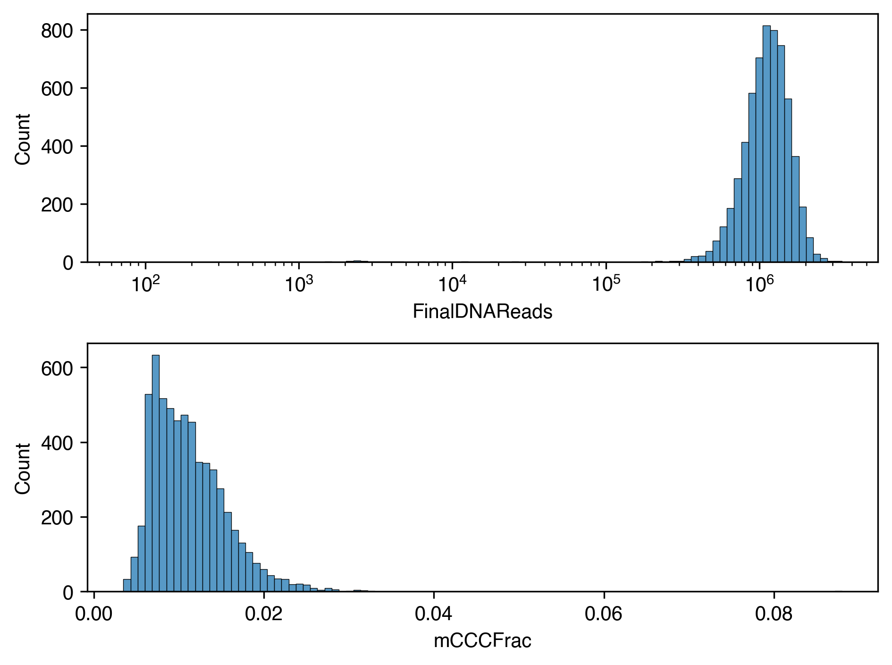
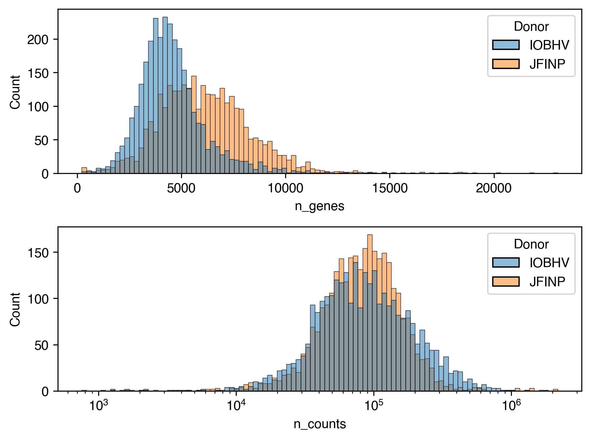
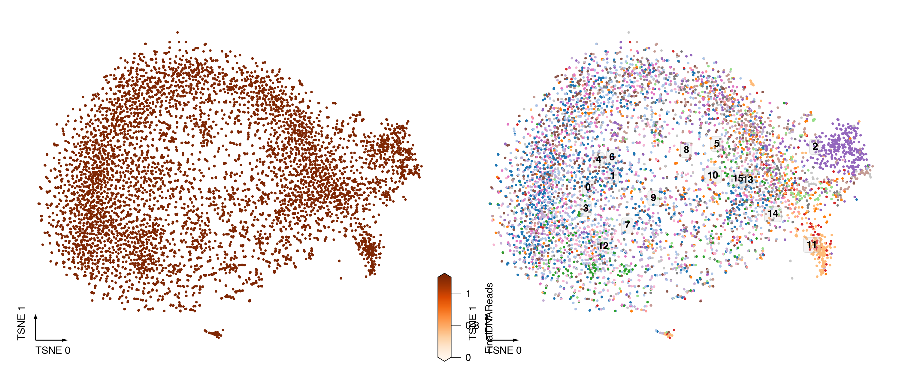
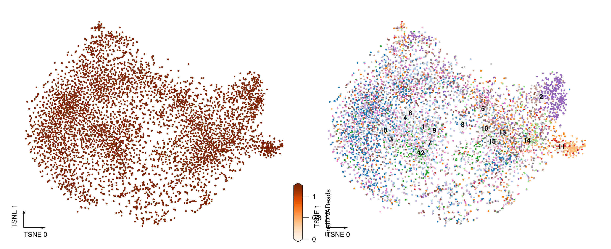
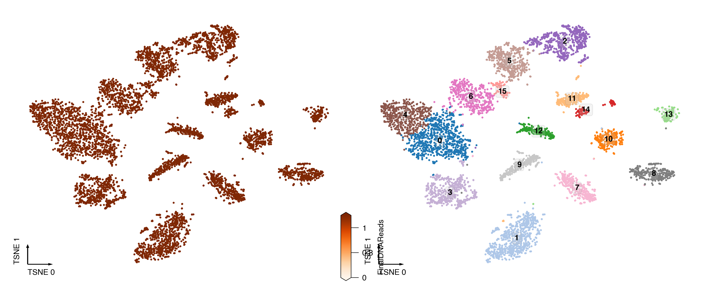

10. Colon mct#
Part of the Fig. 6 chapter — see it for the panel-by-panel map. The first code cell sets ENTEX_ROOT and activates the no-overwrite guard (see the Reproduction guide). Outputs shown are the author’s original run.
# === Reproduction setup — edit ENTEX_ROOT / REF_ROOT for your machine ===
import os, sys
ENTEX_ROOT = os.environ.get('ENTEX_ROOT', '/large_storage/zhoulab/zhoujt/project/ENTEx')
REF_ROOT = os.environ.get('REF_ROOT', '/large_storage/zhoulab/ref')
BOOK_ROOT = os.environ.get('BOOK_ROOT', f'{ENTEX_ROOT}/analysis/HumanCellEpigenomeAtlas')
sys.path.insert(0, BOOK_ROOT)
os.chdir(f'{ENTEX_ROOT}/analysis') # original working directory
import repro_guard # no-overwrite guard (default: skip existing)
import os
from glob import glob
import numpy as np
import pandas as pd
import matplotlib as mpl
import matplotlib.pyplot as plt
import seaborn as sns
import cooler
import anndata
import scanpy as sc
import scanpy.external as sce
from ALLCools.clustering import *
from ALLCools.plot import *
from ALLCools.mcds import MCDS
from sklearn.decomposition import TruncatedSVD
from sklearn.preprocessing import normalize
# mpl.use('agg')
mpl.style.use("default")
mpl.rcParams["pdf.fonttype"] = 42
mpl.rcParams["ps.fonttype"] = 42
mpl.rcParams["font.family"] = "sans-serif"
mpl.rcParams["font.sans-serif"] = "Helvetica"
import warnings
warnings.filterwarnings("ignore")
def dump_embedding(adata, name, n_dim=2):
# put manifold coordinates into adata.obs
for i in range(n_dim):
adata.obs[f'{name}_{i}'] = adata.obsm[f'X_{name}'][:, i]
return adata
indir = f'{ENTEX_ROOT}/'
# rna_dir = f'{indir}scRNA/Stomach/Nowicki-Osuch2023/'
mct_dir = f'{indir}mCT/'
outdir = f'{indir}analysis/colon_mct/'
# rna_adata = anndata.read_h5ad(f'{rna_dir}Stomach_Nowicki-Osuch2023_ds.h5ad')
# rna_adata
AnnData object with n_obs × n_vars = 13389 × 3029
obs: 'Sample', 'Tissue_in_paper', 'Batch', 'Sample_Barcode', 'sum', 'detected', 'Study', 'Patient_type', 'Patient_status', 'MT.prop', 'sizeFactor', 'Global_cluster_selected', 'Celltypes_global', 'Tissuetypes_global', 'celltype', 'cell_type_ontology_term_id', 'assay_ontology_term_id', 'tissue_ontology_term_id', 'disease_ontology_term_id', 'sex_ontology_term_id', 'organism_ontology_term_id', 'self_reported_ethnicity_ontology_term_id', 'donor_id', 'suspension_type', 'development_stage_ontology_term_id', 'is_primary_data', 'tissue_type', 'cell_type', 'assay', 'disease', 'organism', 'sex', 'tissue', 'self_reported_ethnicity', 'development_stage', 'observation_joinid', 'total_counts', 'tsne_0', 'tsne_1'
var: 'feature_name', 'feature_reference', 'feature_biotype', 'feature_length', 'highly_variable', 'highly_variable_rank', 'means', 'variances', 'variances_norm', 'highly_variable_nbatches', 'celltype_enriched_features'
uns: 'celltype_feature_enrichment', 'log1p', 'pca'
obsm: 'RNA_pc30hm_tsne', 'RNA_pca', 'X_pca', 'X_pca_harmony', 'X_tsne'
varm: 'PCs'
mct_adata = anndata.read_h5ad(f'{mct_dir}entex_2_rna.h5ad')
mct_adata
AnnData object with n_obs × n_vars = 6104 × 58870
obs: 'InputReadPairs', 'InputReadPairsBP', 'TrimmedReadPairs', 'R1WithAdapters', 'R1QualTrimBP', 'R1TrimmedReadsBP', 'R2WithAdapters', 'R2QualTrimBP', 'R2TrimmedReadsBP', 'DNAUniqueMappedReads', 'DNAUniqueMappingRate', 'DNAMultiMappedReads', 'DNAMultiMappingRate', 'DNAOverallMappingRate', 'RNAUniqueMappedReads', 'RNAUniqueMappingRate', 'RNAMultiMappedReads', 'RNAMultiMappingRate', 'RNAOverallMappingRate', 'DNAUniqueAlignFinalReads', 'DNAUniqueAlignDuplicatedReads', 'DNAUniqueAlignPCRDuplicationRate', 'DNAMultiAlignFinalReads', 'DNAMultiAlignDuplicatedReads', 'DNAMultiAlignPCRDuplicationRate', 'FinalDNAReads', 'SelectedDNAReadsRatio', 'FinalDNAReads.1', 'SelectedDNAReadsRatio.1', 'FinalRNAReads', 'SelectedRNAReadsRatio', 'mCCCCov', 'mCGCov', 'mCHCov', 'mCCCmC', 'mCGmC', 'mCHmC', 'mCCCFrac', 'mCGFrac', 'mCHFrac', 'AssignedRNAReads', 'UnassignedRNAReads', 'AssignedRNAReadsRate', 'TotalRNAReads', 'RNADetectedGenes'
var: 'chrom', 'start', 'end', 'gene_name'
# mct_adata.obs['Donor'] = mct_adata.obs.index.str.split('_').str[1]
# mct_adata.obs['Donor'].value_counts()
Donor
JFINP 3057
IOBHV 3028
Name: count, dtype: int64
from scipy.sparse import csr_matrix
mct_adata.X = csr_matrix(mct_adata.X)
fig, axes = plt.subplots(2, 1, dpi=300)
ax = axes[0]
sns.histplot(data=mct_adata.obs, x='FinalDNAReads', log_scale=True, bins=100, ax=ax)
ax = axes[1]
sns.histplot(data=mct_adata.obs, x='mCCCFrac', bins=100, ax=ax)
fig.tight_layout()

mct_adata.obs['n_genes'] = (mct_adata.X > 0).sum(axis=1).A1
mct_adata.obs['n_counts'] = mct_adata.X.sum(axis=1).A1
sc.pp.filter_cells(mct_adata, min_genes=200)
sc.pp.filter_genes(mct_adata, min_cells=10)
fig, axes = plt.subplots(2, 1, dpi=300)
ax = axes[0]
sns.histplot(data=mct_adata.obs, x='n_genes', hue='Donor', bins=100, ax=ax)
ax = axes[1]
sns.histplot(data=mct_adata.obs, x='n_counts', hue='Donor', log_scale=True, bins=100, ax=ax)
fig.tight_layout()

mct_adata.raw = mct_adata.copy()
mct_adata = anndata.AnnData(X=mct_adata.raw.X, obs=mct_adata.obs, var=mct_adata.raw.var)
sc.pp.highly_variable_genes(mct_adata, n_top_genes=3000, flavor='seurat_v3')
sc.pp.normalize_total(mct_adata, target_sum=mct_adata.obs['n_counts'].median())
sc.pp.log1p(mct_adata)
# mct_adata = mct_adata[:, mct_adata.var['highly_variable']].copy()
# sc.pp.scale(mct_adata, max_value=10)
sc.tl.pca(mct_adata, svd_solver='arpack', random_state=0, n_comps=50)
mct_adata.obsm['RNA_pca'] = mct_adata.obsm['X_pca'].copy()
significant_pc_test(mct_adata, p_cutoff=0.05, update=False, obsm='X_pca')
6 components passed P cutoff of 0.05.
6
npc = 20
mct_adata.obsm['X_pca'] = normalize(mct_adata.obsm['RNA_pca'][:, :npc], axis=1)
tsne(mct_adata, obsm='X_pca', metric='euclidean', exaggeration=-1, perplexity=50, n_jobs=-1)
mct_adata.obsm[f'RNA_pc{npc}_tsne'] = mct_adata.obsm['X_tsne'].copy()
# sce.pp.harmony_integrate(mct_adata, 'Donor', basis='X_pca', max_iter_harmony=30, random_state=0)
# tsne(mct_adata, obsm='X_pca_harmony', metric='euclidean', exaggeration=-1, perplexity=50, n_jobs=-1)
# mct_adata.obsm[f'RNA_pc{npc}hm_tsne'] = mct_adata.obsm['X_tsne'].copy()
mct_adata.obs.loc[mcad.obs.index, f'5kCG_leiden'] = mcad.obs['5kCG_u16_leiden'].values.copy()
ds = 4
coord_base = 'tsne'
mct_adata.obsm[f'X_{coord_base}'] = mct_adata.obsm[f'RNA_pc{npc}_tsne'].copy()
dump_embedding(mct_adata, coord_base)
tmp = mct_adata.obs.copy()
fig, axes = plt.subplots(1, 2, figsize=(10, 4), dpi=300, constrained_layout=True)
ax = axes[0]
_ = continuous_scatter(data=tmp,
ax=ax,
hue='FinalDNAReads',
coord_base=coord_base,
s=ds,
labelsize=8,
max_points=None,
cmap='Oranges',
hue_norm=[0,2],
scatter_kws={'rasterized':True},
)
ax = axes[1]
_ = categorical_scatter(data=tmp,
ax=ax,
coord_base=coord_base,
hue='5kCG_leiden',
text_anno='5kCG_leiden',
labelsize=8,
s=ds,
palette='tab20',
scatter_kws={'rasterized':True},
# legend_kws={'ncol':1},
# show_legend=True
)

ds = 4
coord_base = 'tsne'
mct_adata.obsm[f'X_{coord_base}'] = mct_adata.obsm[f'RNA_pc{npc}_tsne'].copy()
dump_embedding(mct_adata, coord_base)
tmp = mct_adata.obs.copy()
fig, axes = plt.subplots(1, 2, figsize=(10, 4), dpi=300, constrained_layout=True)
ax = axes[0]
_ = continuous_scatter(data=tmp,
ax=ax,
hue='FinalDNAReads',
coord_base=coord_base,
s=ds,
labelsize=8,
max_points=None,
cmap='Oranges',
hue_norm=[0,2],
scatter_kws={'rasterized':True},
)
ax = axes[1]
_ = categorical_scatter(data=tmp,
ax=ax,
coord_base=coord_base,
hue='5kCG_leiden',
text_anno='5kCG_leiden',
labelsize=8,
s=ds,
palette='tab20',
scatter_kws={'rasterized':True},
# legend_kws={'ncol':1},
# show_legend=True
)

mct_adata.write_h5ad(f'{outdir}mCT_raw.h5ad')
print((mct_adata.obs['FinalDNAReads']>500000).sum(),
(mct_adata.obs['mCCCFrac']<0.1).sum(),
(mct_adata.obs['n_genes']>200).sum(),
mct_adata.shape[0])
5968 6104 6092 6104
selc = mct_adata.obs.index[(mct_adata.obs['FinalDNAReads']>500000) & (mct_adata.obs['mCCCFrac']<0.1)]
print(len(selc))
5968
var_dim = 'chrom5k'
chrom_to_remove = ['chrX', 'chrY', 'chrM', 'chrL']
mcds = MCDS.open(f'{mct_dir}entex_2.mcds', use_obs=selc, var_dim=var_dim)
mcds = mcds.remove_chromosome(exclude_chromosome=chrom_to_remove, var_dim=var_dim)
mcds
42669 chrom5k features in ['chrX', 'chrY', 'chrM', 'chrL'] removed.
<xarray.MCDS> Size: 7GB
Dimensions: (cell: 5968, chrom5k: 575010)
Coordinates:
* cell (cell) <U22 525kB 'pt4_TrCo_P16-2-C18-G4' ... ...
* chrom5k (chrom5k) <U11 25MB 'chr1_0' ... 'chr9_27678'
chrom5k_chrom (chrom5k) <U5 12MB 'chr1' 'chr1' ... 'chr9'
chrom5k_end (chrom5k) int64 5MB ...
chrom5k_start (chrom5k) int64 5MB ...
Data variables:
chrom5k_da_CGN-hypo-score (cell, chrom5k) float16 7GB dask.array<chunksize=(7, 77210), meta=np.ndarray>
Attributes:
obs_dim: cell
var_dim: chrom5kmcad = mcds.get_score_adata(mc_type='CGN', quant_type='hypo')
binarize_matrix(mcad, cutoff=0.95)
Loading chunk 0-5968/5968
black_list_path = f'{REF_ROOT}/blacklist/hg38-blacklist.v2.bed.gz'
filter_regions(mcad, n_cell=5)
remove_black_list_region(mcad, black_list_path=black_list_path)
528745 regions remained.
18678 regions removed due to overlapping (bedtools intersect -f 0.2) with black list regions.
mcad.write_h5ad(f'{outdir}5kCG.h5ad')
model = LSI(scale_factor=10000,
n_components=50,
algorithm='arpack',
random_state=0)
raw_key = '5kCG_lsi'
obsm_key = 'X_lsi'
# adata_mc_list = []
# for xx in adata.obs['Donor'].unique():
# tmp = mcad[adata.obs['Donor']==xx].copy()
model.fit_transform(mcad, obsm_name='5kCG_lsi')
npc = significant_pc_test(mcad, p_cutoff=0.1, obsm=raw_key, update=False)
16 components passed P cutoff of 0.1.
# mcad.obs['Donor'] = mcad.obs.index.str.split('_').str[1]
# mcad.obs['Donor'].value_counts()
Donor
JFINP 2895
IOBHV 2873
Name: count, dtype: int64
mcad.obsm[obsm_key] = normalize(mcad.obsm[raw_key][:, :npc], axis=1)
tsne(mcad, obsm=obsm_key, metric='euclidean', exaggeration=-1, perplexity=50, n_jobs=-1)
mcad.obsm[f'5kCG_u{npc}_tsne'] = mcad.obsm['X_tsne'].copy()
sce.pp.harmony_integrate(mcad, 'Donor', basis=obsm_key, adjusted_basis=f'{obsm_key}_harmony', max_iter_harmony=30, random_state=0)
tsne(mcad, obsm=f'{obsm_key}_harmony', metric='euclidean', exaggeration=-1, perplexity=50, n_jobs=-1)
mcad.obsm[f'5kCG_u{npc}hm_tsne'] = mcad.obsm['X_tsne'].copy()
sc.pp.neighbors(mcad, use_rep=obsm_key, n_neighbors=25)
sc.tl.leiden(mcad, resolution=1.0, key_added=f'5kCG_u{npc}_leiden')
selcols = ['FinalDNAReads', 'FinalRNAReads', 'mCCCFrac', 'mCGFrac', 'mCHFrac']
mcad.obs = pd.concat([mcad.obs, mct_adata.obs.loc[mcad.obs.index, selcols]], axis=1)
ds = 4
coord_base = 'tsne'
mcad.obsm[f'X_{coord_base}'] = mcad.obsm[f'5kCG_u{npc}_tsne'].copy()
dump_embedding(mcad, coord_base)
tmp = mcad.obs.copy()
fig, axes = plt.subplots(1, 2, figsize=(10, 4), dpi=300, constrained_layout=True)
ax = axes[0]
_ = continuous_scatter(data=tmp,
ax=ax,
hue='FinalDNAReads',
coord_base=coord_base,
s=ds,
labelsize=8,
max_points=None,
cmap='Oranges',
hue_norm=[0,2],
scatter_kws={'rasterized':True},
)
ax = axes[1]
_ = categorical_scatter(data=tmp,
ax=ax,
coord_base=coord_base,
hue=f'5kCG_u{npc}_leiden',
text_anno=f'5kCG_u{npc}_leiden',
labelsize=8,
s=ds,
palette='tab20',
scatter_kws={'rasterized':True},
# legend_kws={'ncol':1},
# show_legend=True
)

mcad = anndata.AnnData(obs=mcad.obs, obsm=mcad.obsm, obsp=mcad.obsp)
mcad.write_h5ad(f'{outdir}5kCG_embed.h5ad')